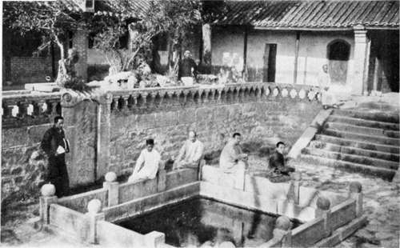

VI. The Incense Burner
Description
This section is from the book "Foreign Magic: Tales of Every-Day China", by Jean Carter Cochran. Also available from Amazon: Foreign Magic: Tales of Every-Day China.
VI. The Incense Burner
CHANG Dah Mah sat sipping her tea with deep indrawn breaths of content; she nodded her head sagely to give emphasis to the remark she was making. "So I said to the foreign lady, 'Books won't do, Mrs. Scott, books won't do out our way, for the necromancer is the only one that can read, and he's blind'."
Her companion felt that Chang Dah Mah had made the only possible rejoinder under the circumstances, but realising that her friend had more conversational tit-bits in reserve, Wu Sao Tze remained silent.
Chang Dah Mali nibbled daintily at a watermelon seed and continued, "It takes a fast rider and an early start to reach one's destination before a foreigner, for Mrs. Scott replied, 'In that case I think we will have to teach you to read,' and I was so surprised I promised that I would come twice a week to a class. I can't imagine why I did. Whoever heard of a wornan's learning to read at my age, and why should they want to take the trouble? It seems strange enough."
Wu Sao Tze shook her head; it all sounded very suspicious. "You had better beware," she said. "There is black magic in those foreign books; I have it on good authority that they seem to teach beautiful doctrines, but those who try to practise them become very queer," and she tapped her forehead suggestively.
Chang Dah Mah was thoughtful for a minute. "I am not sure, but I think those reports, are wrong, for our own wise men say, 'Benevolence is man's peaceful abode; righteousness is his straight path.' I sometimes wonder if it would not be well if the Chinese were queer in the same way. I was told when I went to the hospital nearly blind that the foreigners would cut out my eyes to make medicine; instead, they gave me back my sight. Did a Chinese doctor ever make a blind per-, son see? They stick needles into the eye and then one is blind without a shadow of doubt. Now there is Mrs. Scott, the doctor's wife; he is as polite to her as he would be to a man; he actually allows her to go through a door before himself, and he opens it for her most courteously. Do not mention it, but," and here Chang Dah Mah cast a furtive glance around her to be sure there was no listener to the terrible heresy she was about to utter, "I sometimes wish I had been born a foreign woman myself,"
Wu Sao Tze's startled glance made Chang Dah Mah realise that she had gone too far; should Wu Sao Tze report this, it might get her into trouble with her family and neigh-* bours. Here was a case for diplomacy. "I suppose you would not care to attend tins' class, you might be afraid of the magic? It is a pity, too, for there is so seldom anything new in this part of town, and the foreigners have all sorts of strange toys that they show one. There is a box of music that plays without any one's touching it; it can't be bewitched, for the head official has one at the yamen, and he would not use a dangerous thing, for he is a learned man. Then they have clocks that strike, and queer furniture and clothes. They do not use chopsticks, but knives and forks that are most barbarous. It is too bad, but of course you would not feel it safe to come, and I would not even suggest it to you."
The Chinese are often called a peculiar people, but when we come to analyse them they are not very different from ourselves, for
American ladies have been known to gossip over a cup of tea. Curiosity does frequently overcome their prudence, and the temptation of being seen with a woman of better birth has sometimes caused them to accept an invitation, no matter what the consequences.
Although Chang Dah Mah did not know how to read, she knew womankind and was not at all surprised when her friend swallowed her skilfully dangled bait and said that she would join the class. The temptress drew a sigh of relief, for now she felt safer; Wu Sao Tze could not accuse her of being under the foreign influence if she went to their home herself.
The sun set early on those November days, and long shadows from the western mountain were creeping down the narrow street of the little hamlet where Chang Dah Mah lived. The village was nothing but an unkempt suburb of the larger city that lay to the north; a suburb that had once been properous, but, like the inhabitants themselves, it had fallen into adversity.
Chang Dah Mah' knew that she must now make her adieux. Having thanked Wu Sao Tze for her boundless hospitality, and having made arrangements for them to go together on the following day to1 thd foreign lady's class, the two friends separated.
The family of Chang were in no sense par-venues, for they could trace their ancestry back through many generations. In China, where everything old is regarded almost as fetish, good lineage is doubly respected; but, alas, this family had little else but past grandeur to live upon, and their present condition could best be described as "decayed gentility." The Taip-ing rebellion had swept over that part of the country, leaving devastation in its wake, and the city and the neighbourhood almost a heap of ruins.
The Changs lived in patriarchal fashion, after the manner of China's best families; three generations of sons, their wives, and their children all dwelt under one roof—or what remained of one roof. And such an arange-ment, as Chang Dah Mali could attest, does not make for peace and a quiet life.
No one need tell her the scene that would greet her when she entered her home; she knew that the children would be quarrelling, the women gossiping, and the men loafing. The condition of their finances was> rendered precarious from the fact that the men "could not dig," for manual toil was beneath them. "To beg they were ashamed," and they had no learning; so the only practicable means of support was to sell an occasional heirloom to the pawnbroker and gamble away the proceeds. Such a course of conduct did' not improve their dispositions.

Continue to: